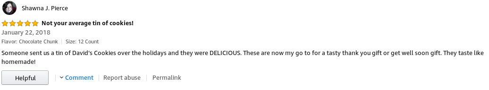
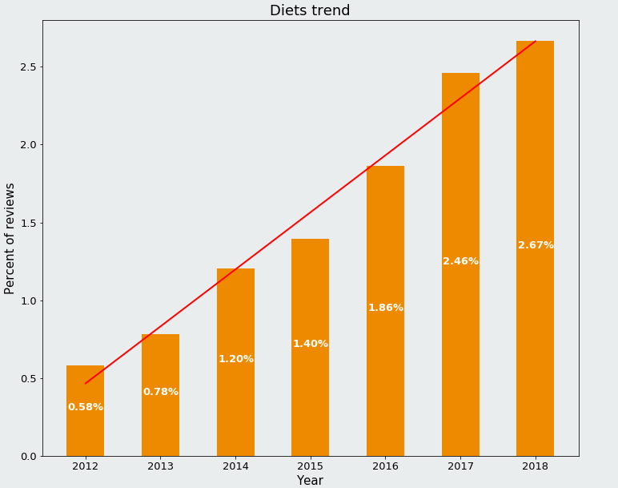

Change title
Change Bob, include research questions
Nowadays Amazon's popularity grows increasingly and becomes massive, it is ubiquitous in our era of cloud services and big data. Amazon has plenty of servers, buys big succesful companies such as Twitch, its CEO is the wealthiest man of our generation. But its underpinning is of course the website Amazon, thus making it a very interesting data provider.
On Amazon you can buy almost any product nowadays, including food. Indeed you can buy your groceries on Amazon and you can see users's ratings of the food item you're looking at. This of course changes the consumer's behavior. However, how much of an impact does it have on the consumer? Does Amazon favor some diets over others? Are users's consumption affected over time or do they keep buying the same stuff? On Amazon you can also see what related products people tend to look at after looking at the one you're looking at. Again, this most likely has an impact on sales, but is it possible to quantify it?
Change Bob
Our dataset is Amazon product data 2018 dataset is Amazon product data 2018, i.e. one of the proposed dataset but updated), more specifically the "Grocery and Gourmet Food", which contains around 5'074'160 millions of reviews from May 1996 to October 2018 along with the food items's metadata. Reviews in the dataset are from USA.
The metadata contains basic information like the product id, but also more complex information like a list of also bought and also viewed products that points to products related to the original one, on two different levels. It also contains the price, the brand and the categories for example.
Concerning the actual reviews in the dataset, they contain all relevant information for a review: reviewer, time of the review, rating on the review, comment of the review.
However, we thus don't directly have access to what users bought. So we must be careful as we can't analyze what people purchased but only what they are reviewing. Also, the metadata is per item so it's not personalized by users.
Example of the review:
Change color
Bob vegan
Bob diet
Bob Country
Nux: “Witness me!”
Immortan Joe: “You will ride eternal, shiny and chrome.”
Nux: “I live, I die, I live again!”
Immortan Joe: “Return my treasures to me, and I myself will carry you to the gates of Valhalla.”